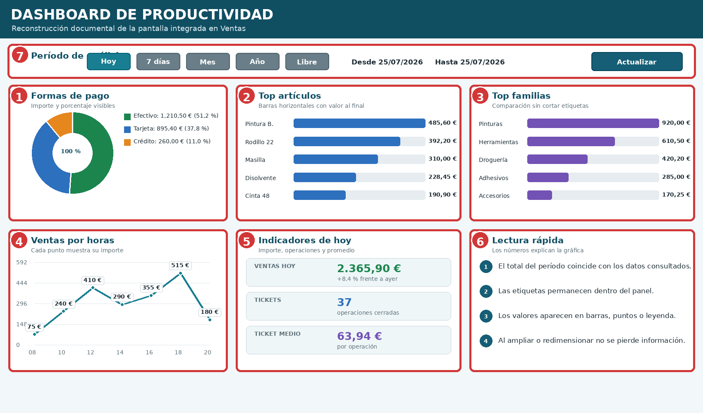
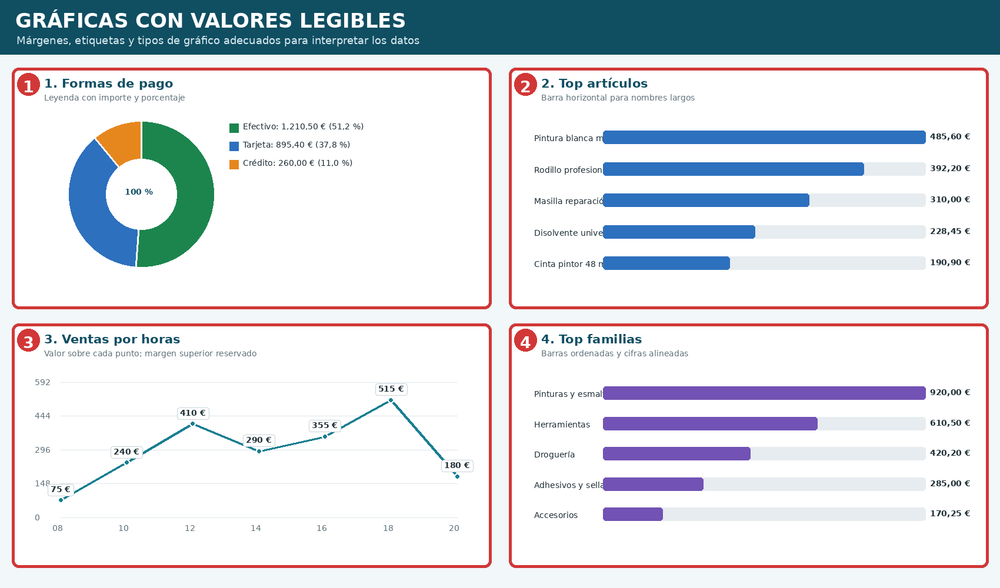
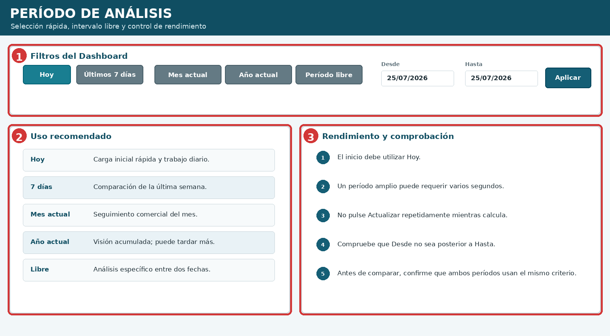
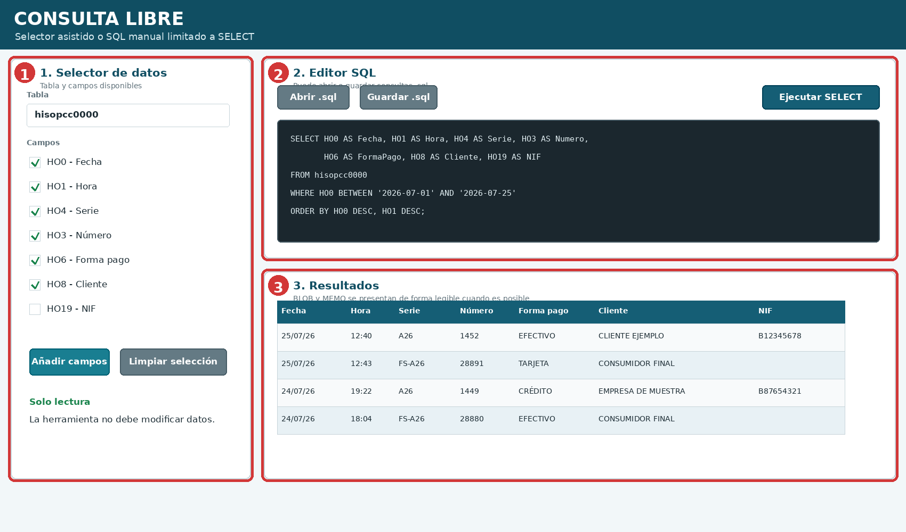
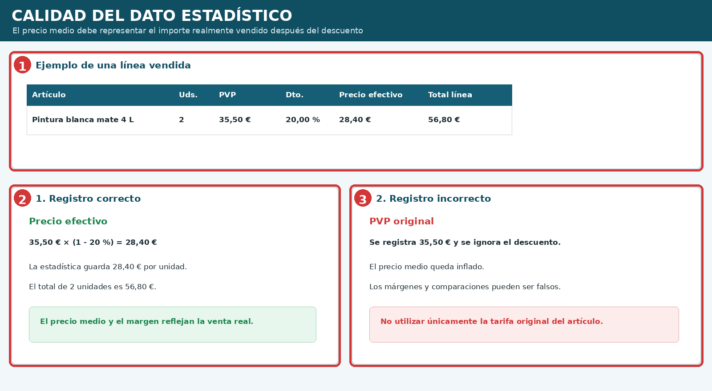
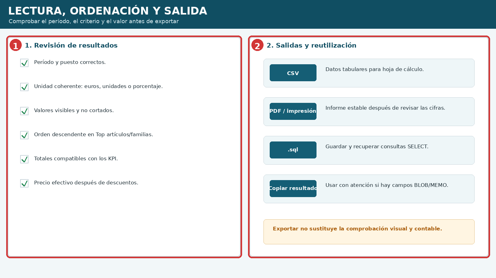

Dashboard, consultas y estadísticas
Edición v1.2 · Mantenimiento y solución de problemas ilustrado
10.1 Pantalla general del Dashboard de productividad #
La pantalla reúne filtros de período, cuatro gráficas principales, indicadores del día y acceso a la consulta libre. Su objetivo es facilitar una lectura rápida sin obligar a interpretar barras, puntos o sectores sin cifras.

| N.º | Zona | Lectura principal |
|---|---|---|
| 1 | Formas de pago | Importe y porcentaje de cada método de cobro. |
| 2 | Top artículos | Artículos ordenados por importe o actividad. |
| 3 | Top familias | Peso de cada familia sobre las ventas. |
| 4 | Ventas por horas | Evolución horaria con valores visibles. |
| 5 | Indicadores de hoy | Ventas, tickets y ticket medio. |
| 6 | Consulta rápida | Comprobaciones para interpretar el conjunto. |
| 7 | Período | Hoy, períodos rápidos o fechas libres. |
10.2 Gráficas con valores completos y legibles #
Las barras dejan margen a ambos lados; los nombres largos se entienden mejor en horizontal; las líneas muestran etiquetas en cada punto y los sectores incluyen importe y porcentaje.

- No depender únicamente del color.
- Evitar cifras pegadas al borde del panel.
- Mostrar unidades coherentes: euros, unidades o porcentajes.
- Acortar nombres solo cuando la descripción completa siga disponible.
10.3 Período de análisis y rendimiento #
El período predeterminado debe ser Hoy para que la apertura sea rápida. Los intervalos amplios pueden tardar más según el volumen de históricos; conviene ampliar solo después de comprobar que la lectura diaria es correcta.

10.4 Consulta libre: selector y SQL manual #
La consulta libre permite elegir tabla y campos o escribir una sentencia SQL. Está limitada a SELECT para reducir el riesgo de modificaciones accidentales. Puede guardar y recuperar consultas .sql.

| N.º | Zona | Función |
|---|---|---|
| 1 | Selector | Tabla y campos que formarán la consulta. |
| 2 | Editor SQL | Abrir, guardar y ejecutar SELECT. |
| 3 | Resultados | Grid legible; BLOB o MEMO visualizado cuando sea posible. |
10.5 Precio real, descuentos y calidad estadística #
Los análisis de precio y margen deben utilizar el precio efectivo vendido después de descuentos. Guardar únicamente el PVP de tarifa puede inflar precios medios y producir conclusiones incorrectas.

| Registro | Resultado |
|---|---|
| Correcto | Precio efectivo después del descuento. |
| Incorrecto | PVP original usado como si fuera el precio real. |
10.6 Ordenación, exportación y reutilización #
Antes de exportar, compruebe período, puesto, unidad, orden y totales. La salida puede utilizarse en CSV, PDF, impresión o consulta guardada, pero no sustituye la revisión visual y contable.

10.7 Interpretación práctica de los indicadores #
| Indicador | Qué representa | Precaución |
|---|---|---|
| Venta hoy | Importe acumulado del día. | Confirmar puesto y documentos incluidos. |
| Tickets | Número de operaciones cerradas. | No confundir líneas con documentos. |
| Ticket medio | Venta dividida entre tickets. | Un abono o rectificativa puede alterar el promedio. |
| Top artículos | Productos con mayor importe o actividad. | Comprobar el criterio usado. |
| Top familias | Concentración por familia. | Artículos sin familia pueden agruparse aparte. |
| Ventas por horas | Momentos de mayor actividad. | Comparar jornadas equivalentes. |
| Formas de pago | Distribución de cobros. | Separar deuda/crédito del cobro efectivo. |
10.8 Errores frecuentes #
| Síntoma | Causa probable | Comprobación |
|---|---|---|
| Número cortado | Margen insuficiente o panel pequeño. | Aumentar margen y revisar redimensionado. |
| Gráfica sin valores | Etiquetas desactivadas. | Mostrar cifra en barra, punto o leyenda. |
| Período tarda demasiado | Intervalo amplio o consulta pesada. | Volver a Hoy y ampliar progresivamente. |
| Totales no coinciden | Filtros o tipos documentales distintos. | Revisar puesto, fechas y criterio. |
| Precio medio demasiado alto | Se usa PVP sin descuento. | Usar precio efectivo vendido. |
| Consulta rechazada | No es SELECT o contiene instrucciones. | Simplificar y ejecutar solo lectura. |
| BLOB/MEMO ilegible | Campo binario o contenido largo. | Usar visualización textual o exportación. |
10.9 Procedimiento recomendado #
- Abra el Dashboard y confirme que el período inicial es Hoy.
- Compruebe puesto, fechas y filtros.
- Revise primero los KPI y después las gráficas.
- Lea importes y porcentajes visibles.
- Ordene artículos y familias según el criterio estudiado.
- Amplíe el período solo cuando la consulta diaria sea correcta.
- Para necesidades específicas, utilice Consulta libre con SELECT.
- Revise descuentos y precio efectivo antes de calcular precios medios.
- Exporte únicamente después de comprobar totales y unidades.
10.10 Lista final de comprobación #
- Dashboard abre inicialmente con Hoy.
- Puesto y período correctos.
- Todas las gráficas muestran números visibles.
- Ninguna etiqueta queda cortada.
- Formas de pago muestran importe y porcentaje.
- Top artículos y familias están ordenados.
- Ventas por horas muestran el valor de cada punto.
- KPI y totales son coherentes.
- Consulta libre ejecuta solo SELECT.
- BLOB y MEMO se visualizan de forma comprensible cuando es posible.
- Precio medio utiliza el precio efectivo tras descuento.
- Exportación revisada antes de guardar o imprimir.
- Cuadros, números y leyendas de las figuras coinciden.